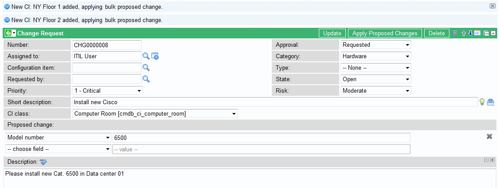

Best Practice - Bulk CI Changes
Contents
1 Overview
This plugin provides functionality to record a single change proposal that will be linked to all affected CIs. The fields CI Class and Proposed Change were added to the Change Request form with this plugin.
This plugin is useful for change processes that use:
- The Proposed Change feature to update CI data.
- Change requests based on a single CI Class.
- The Affected CI related list to track impacted CIs.
2 Plugin Contents
Below are a list of the elements added by installation of the Best Practice - Bulk CI Changes Plugin.
2.1 Database Table Structure Changes
2.1.1 change_request (Change Request) Table
Configure the form to add these fields:
| Field | Input Value |
| ci_class | A Table Name type field to identify the class of CIs that the change applies to. |
| proposed_change | A template value type field to capture the field change values that could be applied to each affected CI. |
2.1.2 task_ci (Affected CIs) Table
| Field | Input Value |
| ci_item | Adds a reference qualifier to filter the Affected CI lookup to the CI Class defined in the change request. |
2.2 Business Rules
The following business rules are added when the plugin is installed:
| Business Rule | Table | Description |
| Clear Proposed Change on Class Change | change_request | Runs when the ci_class field is changed. Clears the proposed change field value. |
| Delete Affected CIs on Class Change | change_request | Runs when the ci_class field is changed. Deletes task_ci records since they may no longer match the ci_class. |
| Deploy Proposed Changes to CIs | change_request | Runs on update when proposed change value changes. Copies the current proposed change from the change request to the task_ci record. |
| Deploy Proposed Changes to new CIs | task_ci | Runs on all inserts where task class is change_request. Copies the current proposed change from the change request to the task_ci record. |
| affectedCIClassFilter | global | A special global rule script called by the new attribute on the task_ci.ci_item field to filter the lookup of CIs based on the change_request.ci_class field value. |
2.3 Client Scripts
The following client script is added when the plugin is installed:
| Client Script | Table | Description |
| Alert on Change of CI Class | change_request | Triggered by a change in the ci_class field. Alerts the user that the affected CI's will be deleted, then forces a form Submit so the business rules run. |
2.4 UI Actions
The following UI actions are disabled since they are designed to work with individual affected CI propose changes.
- Save Proposed Changes
- Propose Changes
2.5 UI Policies
The following UI policy is included in the plugin:
| Table | Conditions | Description |
| change_request | ci_class=^EQ | Hide Proposed Change if CI Class is blank. |
3 Using the Bulk CI Changes Plugin
Perform the following procedures on the change request form:
- Configure the change request form as follows:
- a. Add the CI Class and Proposed Change fields, if they are not already visible.
- A UI policy hides the Proposed Change field until a CI class is selected.
- b. Add the Affected CI related list, if it doesn't already exist.
- c. Remove the Configuration Item field from the form, since all CIs should be tracked through the affected CI related list.
- a. Add the CI Class and Proposed Change fields, if they are not already visible.
- Select a CI class.
- The form will submit and save if all the mandatory fields are completed.
- Click Edit on the affected CI related list.
- The selection is filtered to show only CIs from the selected class.
- Add the CIs that are involved in the change.
- Populated the Proposed change field with the intended changes.
- This process is that same as proposing a single affected CI change. Whenever the Proposed change field is modified or affected CIs are added, the saved changes are linked to all affected CIs. There are no changes to how applying proposed changes works.
- Update the record.
- The resulting changes are listed at the top of the form. These messages appear on the form only if there are CIs listed in the Affected CIs list.
- 
{kind=link}
{kind=link}
4 Activating the Plugin
| Click the plus to expand instructions for activating a plugin. |
|---|
|
If you have the admin role, use the following steps to activate the plugin.
|